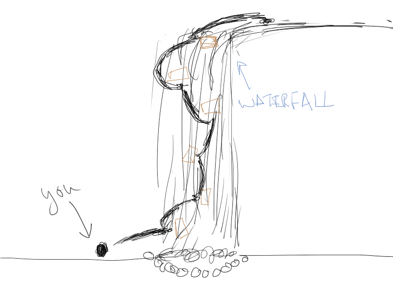

Sleeping Ninja is a 2D RPG platformer. The story/setting is that the player is a ninja tasked with sneaking into the evil shogun's castle and finding evidence of the shogun's corrupt/evil deeds. Along the way, the player will have to sneak through high security areas, release and save the shogun's prisoners as well as the daughter of his own daimyo, and defeat the enemy's generals.
The story/game should be linear to make writing the story and creating the game simple. The game can be mission-driven. The player is given a mission and should complete the relevant levels. Afterward, more of the story is revealed (as well as the next mission). This continues until the game is completed, i.e. the evil shogun is defeated.
The main mechanic to Sleeping Ninja is that the player can freely move with the mouse for short bursts of time and distance. The time and distance are refreshed whenever the player touches the ground or other objects (restrictions can be placed on this and a lot of creativity can be shown through level design). For example, if there are logs continuously falling down a waterfall, the player can scale it by moving from one log to the next quickly. If the player breaks the time/distance limit, the player loses all velocity and falls asleep for a brief period of time.
The second mechanic is that when the player attacks with his katana, he puts things to sleep. The attack affect the area around the player. It could be interesting to allow attacking while in free movement. For comedic effect, objects (like arrows or shurikens) can be put to sleep. Note, when something falls asleep, it loses all velocity.
The player can move normally with WASD (W can be jump, or there could be another key for it). Space can be used for attacking, and CTRL or SHIFT for activating free movement.